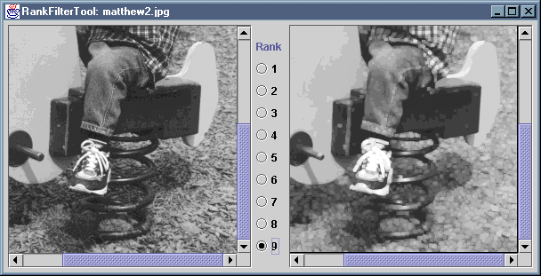

The RankFilterTool application displays an image and allows
the user to apply any of the nine possible 3x3 rank filters to that image.
The application consists of the source file
RankFilterTool.java, which compiles into
RankFilterTool.class and
RankFilterTool$Controls.class. These have been packaged as a
single JAR file, RankFilterTool.jar. You can install the
application by copying this JAR file, along with either the MS-DOS batch
file RankFilterTool.bat or the bash shell script
RankFilterTool.sh, as appropriate. The batch file or script
should be edited to reflect the new location of the JAR file.